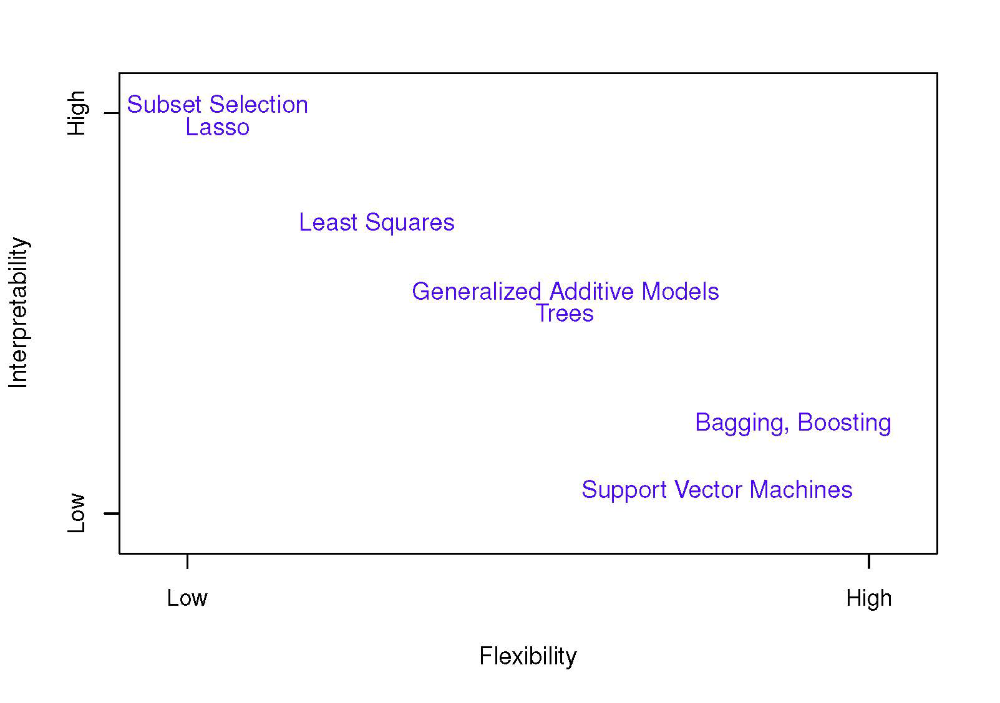
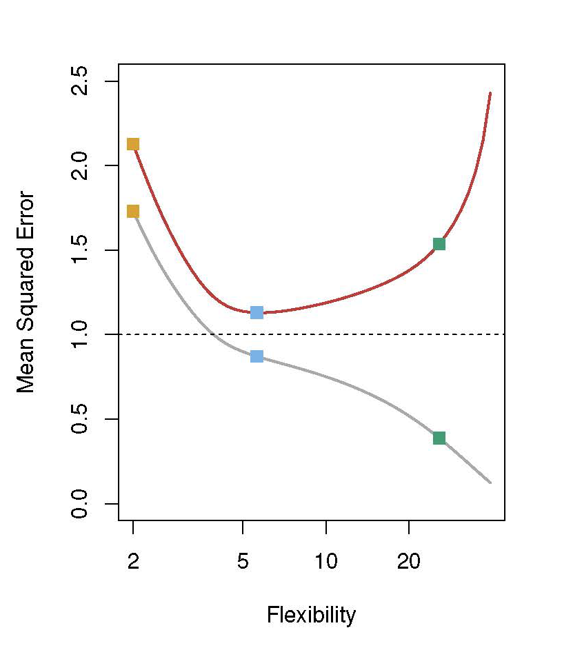
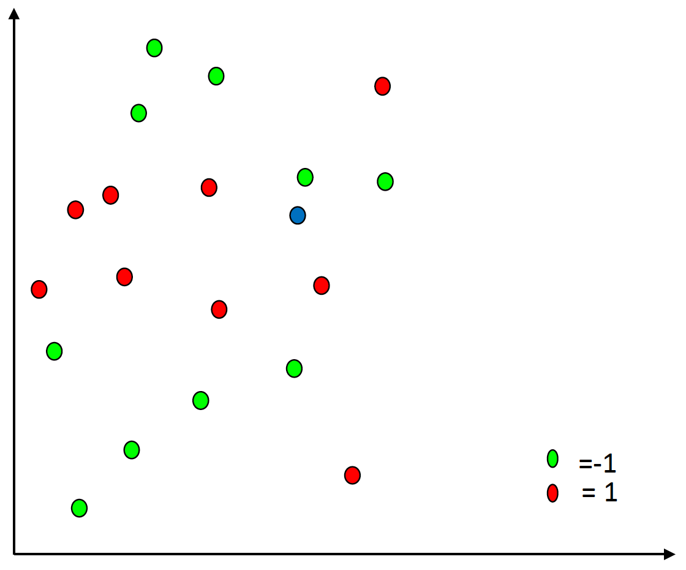
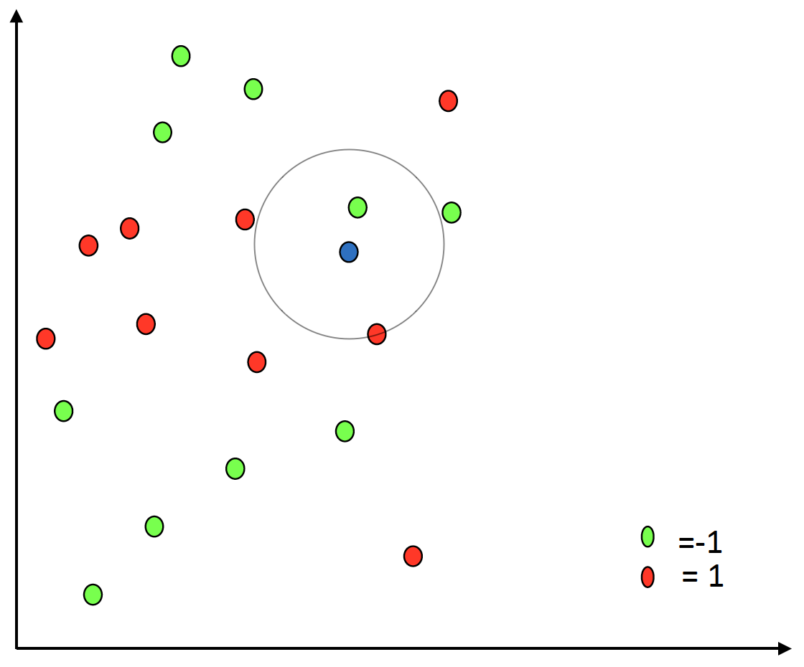
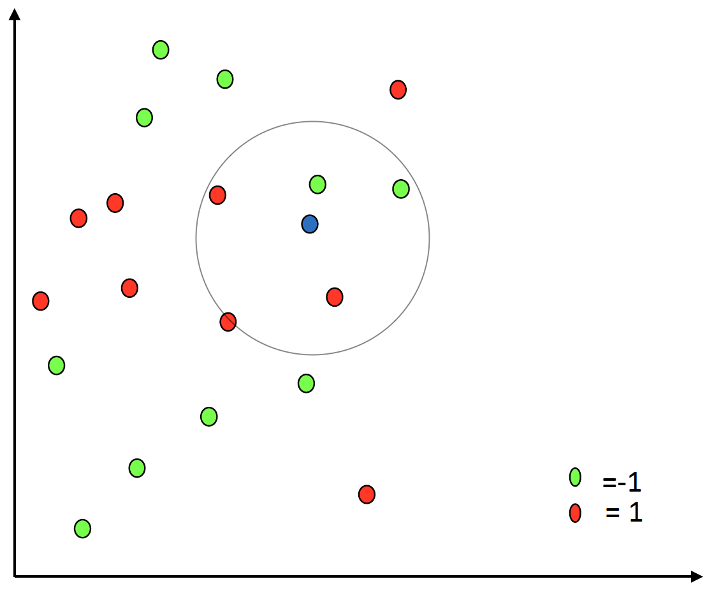
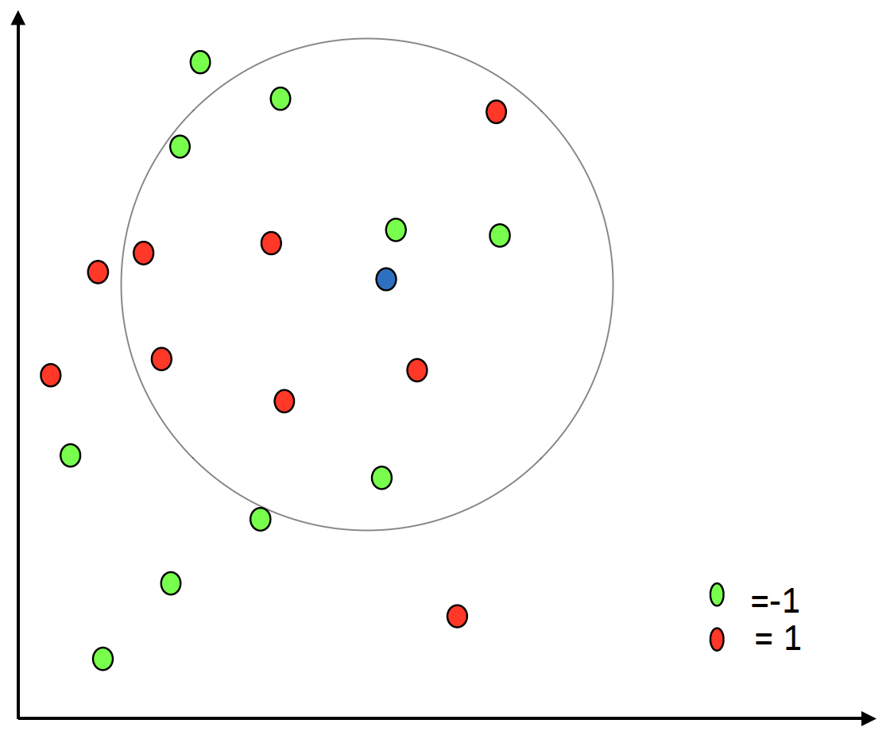
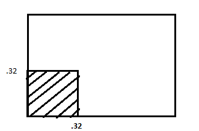

Fundamentals of
Data Analytics and
Predictions
Statistical Learning 2
Xi (Rossi) LUO
Department of Biostatistics and Data Science
School of Public Health
The University of Texas Health Science Center at Houston
Outline
- Inference vs. Prediction
- How to estimate $f$
- Assessing Model Accuracy
Prediction vs. Inference
- We often want to estimate the target function $f(X)$ either for prediction of $y$ or for
inference
- Prediction: predicting (future) $y$ for new $X$
- Inference: understand relationships between $X$ and $y$
- Examples: major risk factors for COVID death
Prediction
- When the inputs $X$ are available but the output $Y$ is hard to obtain (or will happen
sometime
in the future): $\hat Y=\hat f(X)$, where $\hat f$ represents our estimate for $f$, and
$\hat Y$ is the prediction for $Y$
- Note: The goal is to estimate $f$, given that there will be some error that will exist that
we cannot
reduce (e.g., some important variables that predict $Y$ are not measured at all or measured
imperfectly)
Prediction Examples
- $X_1, ..., X_p$ are characteristics of a patient when they come into the ICU after a traumatic
brain
injury; $Y$ is whether the patient will survive at discharge. Having a prediction of whether the
patient will survive can change the management of those patients.
- Have data of patient's blood sample that can be easily measured in a lab, $Y$ is a variable
encoding
the patient's risk for a severe adverse reaction to a particular drug. Can avoid giving the drug
in
question to patients who are at high risk of an adverse reaction.
Inference
- Interested in understanding the way that $Y$ is affected as $X_1, ..., X_p$ change
- Which predictors are associated with the response?
- What is the relationship between the response and each predictor?
- Can the relationship between $Y$ and each predictor be adequately summarized
using a linear equation, or is the relationship more complicated?
Inference Examples
- In a hypertension study, demographic and clinical characteristics are collected and we may
study whether blood pressure will increase or decrease at a follow-up date.
- Which demographic variables contribute to blood pressure increase?
- Is there a difference by race or gender?
- In the branding of a product that a customer might purchase based on variables such as
price, store location, discount levels, competition price, etc., the store might be
interested in how an individual variable (price of product) has on the sales.
Prediction vs. Inference
- Different methods for estimating $f$ may be more appropriate for each goal
- For inference, linear models allow for relatively simple and
interpretable inference, but may not be as accurate for predictions
- For prediction, non-linear models often give more accurate
predictions, but at the expense of a less interpretable model
How to estimate $f$
- Assume we have data on $n$ data points:
- $x_{ij}$ for the $i^{th}$ observation and $j^{th}$ predictor, where $i=1, ..., n$
and $j=1, ..., p$;
- $y_i$ represents the response variable for the $i^{th}$ observation
- Often refer to this data as the training data
- Goal: apply a statistical learning method to the training data to estimate the unknown
function $f$. These methods can be characterized as parametric or
nonparametric.
Notations
$$
X = \begin{pmatrix}
x_{11} & x_{12} & ... & x_{1p}\\
x_{21} & x_{22} & ... & x_{2p}\\
& & \vdots \\
x_{n1} & x_{n2} & ... & x_{np}\\
\end{pmatrix}
$$
- Rows: observations. Cols: variables
- Row vector $x_i$ for the $i$th obs, $(x_i, y_i)$ for both input and output data from obs $i$
- Random variable $X_j$ for the $j$th variable
Parametric Methods
- Assume the functional form of $f$ is linear. For example, linear in $X$:
$f(X)=\beta_0+\beta_1X_1+\beta_2X_2+...+\beta_pX_p$
- Using the training data, have to fit the model
- e.g. in linear regression, can use ordinary least squares or other methods to estimate the
coefficients
- Advantage:
- Simplifies the problem and interpretation
- Disadvantage:
- May oversimplify the problem where the model doesn't match the true unknown form of $f
\rightarrow$ poor estimate
Non-parametric Methods
- Do not make explicit assumptions about the functional form of f. Instead, find a function that
gets as close to the
data points as possible without being too rough or wiggly.
- Advantage:
- Have the potential to accurately fit a wider range of possible shapes for $f$.
- Disadvantage:
- A very large number of observations is required in order to obtain an accurate estimate for
$f$.
- Not easily interpretable as the parametric methods
Example
- Can fit a thin-plate spline to go through all of the data points exactly, but at the expense
of being a rougher
surface of the $X$ space. However, we can vary the amount of smoothness.
- ISL Figure 2.4 vs 2.5 vs 2.6
Trade-off between Prediction Accuracy and Model Interpretability

Assessing Model Accuracy
- Not one method dominates all others over all possible data sets. Therefore, important to have a
set of tools and be
able to assess which works best on a particular dataset
- The assessment of model accuracy is different for the regression setting versus
for the classification setting
Measuring the Quality of Fit: Regression Setting
- Most commonly-used measure is the mean squared error (MSE), given by
$MSE=\frac{1}{n}\sum_{i=1}^{n}(y_i-\hat{f}(x_i))^2$
- If the predicted responses are very close to the true responses, the MSE will be small
- Note: We are most interested in MSE for future patients, not for the training data
- Typical data-generating model: $y = f(x) + \epsilon$
Training vs Testing
- Training data: a subset of observations used for fitting the model parameters
- Testing data: a different subset not used for fitting the model
Measuring the Quality of Fit: Regression Setting
- What if have 10 different models and have the MSE on the training set. Would you
choose the one
that has the lowest MSE as your best model?

Training MSE (gray), testing (red), underlying relationship
non-lineear, orange square-linear reg, blue/green-splines, cf Fig 2.10
Bias and Var Trade-off
- On testing data point $x_0$
$$
\begin{multline*}
E (y_0 - \hat{f}(x_0))^2 = \mbox{Var}(\hat{f}(x_0) ) \\ + [\mbox{Bias}(\hat{f}(x_0))]^2 +
\mbox{Var}(\epsilon)
\end{multline*}
$$
- Ideally, expect $\hat{f}$ not varying too much across different training
- $\mbox{Var}(\epsilon)$ cannot be reduced, irreducible error
- Goal to reduce the sum of the first two
$$
\mbox{Var}(\hat{f}(x_0) ) + [\mbox{Bias}(\hat{f}(x_0))]^2
$$
Intuition
- Bias: difference between your model $\hat{f}$ and true $f$
- Variance: changes due to training data change
- In general, more flexible, more variance, less bias
Measuring the Quality of Fit: Regression Setting
- We will discuss different ways to choose models in future lectures. They include:
- Having a test set
- cross-validation
Measuring the Quality of Fit: Classification Setting
- In classification, $y_i$ is categorical (qualitative)
$$
\mbox{Training error rate} = \frac{1}{n}\sum_{i=1}^{n}I(y_i\not=\hat{y}_i)
$$
- Compute the fraction of incorrect classifications in training data. More interested in test
error rate
Measuring the Quality of Fit: Classification Setting
$$
\mbox{Test error rate}=Ave(I(y_0\not=\hat{y}_0))
$$
Average over a reasonable size of testing data while the model is fixed
Example
| Predicted |
Actual |
| L |
L |
| M |
H |
| M |
M |
| H |
H |
| L |
M |
| H |
M |
| M |
M |
Respond at PollEv.com/rossiluo765
or text ROSSILUO765 to 37607
Bayes Classifier
- The minimum test error rate is given by Bayes classifier:
Assign a test observation with predictor vector $x_0$ to the class $j$ for which $Pr(Y=j|X=x_0)$
is largest
- If have a simulated data set, can compute the minimum error using the Bayes error rate. However,
for real data we do not know the conditional distribution of $Y$ given $X$, so cannot
compute the Bayes classifier (theoretical minimum).
- However, many methods try to emulate this process by estimating $Pr(Y=j|X=x_0)$ and then
classifying the observation to the class with highest probability.
Nearest Neighbor —1
- Memory-based (no model is fit)
- Use points closest in the predictor space $X$ to obtain an estimate of $Y$.
- K Nearest Neighbor method (KNN): $Pr(Y=j|X=x_0)=\frac{1}{K}\sum_{i\in N_k(x)}{}I(y_i=j)$
- Where $N_k(x)$ is a neighborhood containing the k-nearest points to $x$.
- Majority class rules.
Nearest Neighbor —2
- Typically standardize the variables to have mean 0, variance 1.
- $\hat{f}(x)=Ave(y_i|x_i\in N_k(x))$ estimates the regression function $E(Y|X=x)$
- Can use Euclidean distance in the feature space to define the distance from some point $x_0$ to
all other points in the training set:
$d_{(i)}=\lVert x_{(i)}-x_0 \rVert=\sqrt{(x_{(i)}-x_0)^2}$
- Other distance measures appropriate for qualitative and ordinal data
Nearest Neighbor Example

Nearest Neighbor Example

Nearest Neighbor Example

Nearest Neighbor Example

How do we choose k?
- Smaller k
- Give more flexible estimates
- Too much flexibility can result in over-fitting
- More variance of estimates
- Larger k
- More stable estimates
- Not as flexible (biased)
- Smallest choice is 1-nearest neighbor
- Largest choice is N-nearest neighbor
Neighborhood in High Dimensions
- Imagine we have equally spaced data and that each covariate is in $[0,1]$.
- If want to use an algorithm like kNN, focusing on the points that are local to where we want to
predict, could use the $10\%$ of the data that is local.
- If we have $p$ covariate and are forming $p$-dimensional cubes, then each side of the cube must
have size $l$ determined by $l\times l\times ...\times l=l^p=0.10$.
Effects of Increasing Dimensionality —1
- If have 2 covariates, the length of cube is $l^2=0.10$, so $l=0.316$.

- If have 3 covariates:
Effects of Increasing Dimensionality —2
- If have 10 covariates, the length of the cube is $l=0.1^\frac{1}{10}=0.8$.
- If we use only 1% of the data that is local:
- If have 10 covariates, $l=0.01^\frac{1}{10}=0.63$
- If have 50 covariates, $l=0.1^\frac{1}{50}=0.91$
- Curse of Dimensionality!
Summary
- Choosing the amount of flexibility is critical to the success of any statistical learning
method.
- As flexibility (model complexity) increases, the test set error decreases, but then starts to
increase. Finding the “sweet spot” will be a main task in this course.